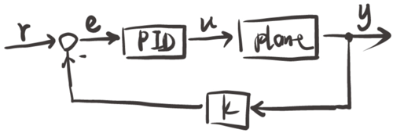
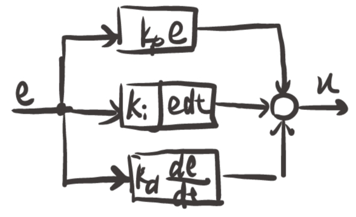
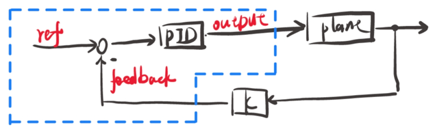
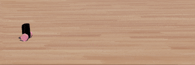

/*-----------------------------*/
📅 2023-01-13
🔄 2023-01-13
⌚ Reading time: 2 min
📂
实时控制在嵌入式平台上完成，ARM 内核的 MCU 主流开发语言还是 C 语言，花点时间去实现一个通用的 PID 控制器是值得的。这里使用 webots 仿真一个平衡车来验证控制器实现的正确性。
平衡车和倒立摆的原理基本一致，可以参考另一个倒立摆 MATLAB 仿真的文章。
一个使用 PID 控制器的控制系统结构如图

其中 PID 控制器串在前向通路上，所以这是一个串联校正装置。PID 控制器内部的结构如下图

数学表达式为
$$ u(t) = K_p e(t) + K_i \int e(t) \text{d}t + K_p \frac{\text{d}e(t)}{\text{d}t} $$
这是个连续函数的表达式。计算机程序是离散时刻运行的，我们还需要得到离散化的表达式。也很容易，离散时间定义域里的求和就是连续时间的积分，离散的差分就是连续的微分。则离散时间定义域下 PID 控制器的表达式为
$$ u(k) = K_p e(k) + K_i \sum e(k) + K_p (e(k) - e(k-1)) \tag{1} $$
式(1)就是位置式PID。
相邻两次控制输出的增量为：
$$ \begin{array}{rcl} \Delta u(k) &= &u(k) - u(k-1) \ &=& K_p [e(k) - e(k-1) ] + K_i e(k) + K_d [e(k) - 2e(k-1) + e(k-2)] \ \ u(k) &=& u(k-1) + \Delta u(k) \ \end{array}\tag{2} $$
式(2)为增量式PID。
首先需要定义一个 PID 控制器的结构体，存放所有的相关参数，声明为 pid_t 类型
typedef struct
{
double ref;
double feedback;
double output;
double kp;
double ki;
double kd;
/* ... 其他的 */
} pid_t;
定义一个控制器可以用
pid_t controller;
定义之后，还需要设置控制参数，当然可以直接修改结构体变量，但是还是写一个函数来实现，让主程序的逻辑更清晰
void pid_set_parameter(pid_t* pid, double kp, double ki, double kd)
{
pid->kp = kp;
pid->ki = ki;
pid->kd = kd;
}
准备工作就这些。
在实际的控制程序中，还需要一个函数来实现框中的部分，及算法本身：

double pid_control(pid_t *pid, double ref, double feedback)
{
pid->feedback = feedback;
pid->ref = ref;
pid->err = pid->ref - pid->feedback;
pid->err_sum += pid->err;
pid->output = pid->kp * pid->err + \
pid->ki * pid->err_sum + \
pid->kd * (pid->err - pid->err1);
pid->err1 = pid->err;
return pid->output;
}
在 webots 搭一个平衡小车，使用上面的控制器实现位置控制。
这是一个典型的三闭环串级 PID 控制结构，核心的控制代码如下
#include <webots/robot.h>
#include <webots/motor.h>
#include <webots/inertial_unit.h>
#include <webots/position_sensor.h>
#include <math.h>
#include <stdio.h>
#include "pid.h"
int main(int argc, char** argv)
{
wb_robot_init();
/* ... 其他设备初始化代码省略 */
/* position pd controller */
double position_ref = 40.0;
double position_feedback = 0.0;
pid_t position_controller;
pid_set_parameter(&position_controller, 0.011, 0.0, 0.03);
pid_set_output_limit(&position_controller, 0.2);
/* velocity pd controller */
double velocity_ref = 0.0;
double velocity_feedback = 0.0;
pid_t velocity_controller;
pid_set_parameter(&velocity_controller, 65.0, 0.0, 20.0);
pid_set_output_limit(&velocity_controller, 10.0);
/* angle pd controller */
double angle_ref = 0.0;
double angle_feedback = 0.0;
pid_t angle_controller;
pid_set_parameter(&angle_controller, 0.008, 0, 0.05);
while (wb_robot_step(TIME_STEP) != -1)
{
/* ... 传感器数据获取代码省略 */
/* position pd control. */
position_feedback = -position;
velocity_ref = pid_control(&position_controller, position_ref, position_feedback);
/* velocity pd control. */
velocity_feedback = -velocity;
angle_ref = pid_control(&velocity_controller, velocity_ref, velocity_feedback);
/* angle pd control. */
angle_feedback = -pitch;
motor_torque = pid_control(&angle_controller, angle_ref, angle_feedback);
wb_motor_set_torque(motor_left, motor_torque);
wb_motor_set_torque(motor_right, motor_torque);
};
wb_robot_cleanup();
return 0;
}
控制效果如下：

控制效果还是可以的。
上面只是实现了基本的位置式 PID 控制器。还有增量式的没有写。此外还有许多改进的 PID 算法如积分分离、微分先行等。
都是以基本的PID为基础，框架就这样了，需要修改的是 double pid_control(pid_t *pid, double ref, double feedback) 这个函数的内部实现。
后面有空再搞搞。